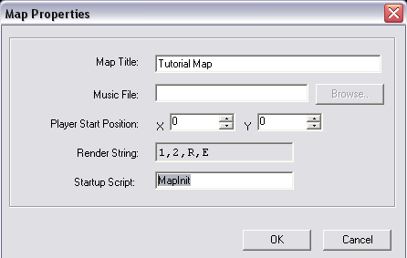

What you'll need:
I've included a basic "package" that contains all the files
that you'll need to start making a game. I've also included a music file, sound effect, a couple of .chr's,
a test map,
a font and a tileset for you to use. You can download it Here. You might also need something like WinZip to extract the files.
In addition to the basic package, in order for you to use the map editor and "packed.exe", you're going to need to have
the Microsoft .NET Framework. That
link will take you the site it is available to download from. Please note that you do *not* need the SDK. Just download
and install the runtime. Furthermore, users are *not* required to have the .NET framework installed to run verge games. The .NET
framework is only needed for using the map editor and "packed.exe", neither of which are required to run verge 3 games.
The files included in the basic package are:
You're also going to need a text editor in order to write code and edit your scripts. You can use any text editor you'd like, even windows Notepad, however I suggest using Textpad, which is a favourite among vergers. It also has the ability to do what’s called "Syntax highlighting", which is very handy. Refer to the "Setting up Textpad for verge" section for information on how to use it.
Verge.cfg:
Before we start writing any code, we should take a look at verge.cfg
which is the configuration file that tells the engine a couple of things. Open
it with textpad and you should see something along these lines:
Let’s go through these
one at a time.
xres and yres:
These two options determine what screen resolution your game is going to
run at. What is screen resolution? Well screen resolution determines how many
"pixels" can be shown on the screen at a time. The higher the number, the more
pixels there can be, and the greater the detail. Having the xres set to
320, and yres set to 240, (320x240) means that we can have 320 pixels
running horizontally across the screen and 240 pixels running vertically, for a
total of 76800 pixels on the screen at a time.
Other popular resolutions include:
640x480 and 800x600. Having the resolution this high gives us the ability to
create more detailed graphics, however, as Benjamin Eirich, Director of the US
Department of Retrogaming, as been quoted as saying "Winners use 320x240." ;P
Just keep in mind that the greater the resolution, the bigger you’re going to
have draw your graphics to compensate for the space. Since you're just starting
out, (assumably), it’s probably best to keep it at 320x240.
nosound:
This toggles music
and sound effects on and off. If we set it to “1” then the sound engine will
turn off, and no music or sound effects will be played even if you tell the
engine to play something.
Windowmode:
This determines whether
or not your game will run in a window. If it is set to 0, your game will run
full-screen.
Releasemode:
This will determine
whether or not the verge compiler (VCC), as mentioned in the section about
compiling, is to compile your code before executing. While working on your game
this should be set to 0, but if you were to release a demo, or send what you've
done to a friend you could set this to 1 and it will load faster.
Automax:
This determines whether or not the window is maximized after verge runs. If set to 1, it will maximize, if set to 0, it will not.
Toen (guru of all things verge, bother him lots for help) says: People with big manly dual monitor setups like it because a 320x240
window looks like a postage stamp for them.
So now that you know
what the verge.cfg file is, what it does, and how you can edit it, you can
now leave it alone so that we can get down to the fun part!
Your first program:
So you've extracted all the contents of the zip file to a folder of your
choice. You've read the required reading, and are wondering: Now what?
Open the file "system.vc" with textpad.
It should be blank
except for a line that says:
//File: System.vc <-- Our must have file //Please fill me with coding goodness!
These are what are
known as "comments". We can use comments like these to write about our
functions and whatever else you would like to comment on, in our .vc files.
For now we'll ignore the idea of comments and get to the good stuff! However, if you wish you can read
about comments here, in the
V3 Manual
You can
delete those lines, or leave them, it doesn't matter. The great thing about comments
is that we can write anything after the double-slash (//) and the compiler will ignore it. So we'll do the
same.
So let’s write some
code!
Type:
void autoexec()
{
Exit("Verge Rocks!");
}
Save your file, and run verge.exe. If all went well, a small message box should have appeared that looks a little something like this.
Congratulations! You
just made your first verge game!
.....Okay so maybe that isn't the funnest RPG anyone will ever play, but hey...it’s
a start, right?
Before we do something
a little more rewarding let’s talk a little bit about what we just did.
As I mentioned before this isn't meant to be a coding tutorial, so I won't go
into too much detail about it. Basically what you need to understand is that,
as I said before, our system.vc file requires a "function" called "autoexec()".
Verge looks to this function to figure out what it needs to do first. In this
case we have made a call to the built-in function "Exit()" telling
verge to quit and give us a message. In this case; "Verge rocks!". Exciting,
no?
Built-in Functions and Variables:
This is a good time to introduce these. Verge comes packed with a variety of what are known as built-in functions and variables. These help to make your game creating experience that much easier. Built-in functions and variables are the basis of all that we will do while programming our game. Again, this isn't a coding tutorial, so we won't go too deep into the subject, but it is important to know that calling these functions allow us to accomplish the things that we want to do.
A more rewarding
experience:
Okay, so now you've coded a bit, let’s do something a little more cooler.
We are now going to load a map, spawn an entity, and set it to be controlled by you(the player).
First things first, reopen "system.vc" and add/edit it so that it looks like this:
int player;
void autoexec()
{
SetAppName("My First Verge Game!");
Map("tutorial.map");
}
Whoa! What’s "int player;" ?!
"int player;" is what is known as a "Global Variable". What this means is that we have created a variable, something that we can assign values to, that can be used in any of our .vc files. You can also declare "local variables" which can only be used in the function they were declared in, however, we won't worry about these. Read the section on "variables" in the Verge 3 Manual for a better understanding of what they are.
What you need to understand, at this point, is that we are going to use this variable to "spawn" an entity that will be controlled by us. Bitchin’.
We've also added these
lines:
SetAppName("My First Verge Game!");
Map("tutorial.map");
The first line:
SetAppName("My first verge game!");
Makes a call to the built-in function
"SetAppName()", and replaces the title of the window with what we've written
between the quotes. Feel free to change this to anything that you want, as long
you make sure that what you write is in between quotation marks.
The second line:
Map("tutorial.map");
Tells the engine to load tutorial.map and carry out any
instructions that have been set for that map. At this point all it will do is
load the map and nothing else since we haven't given it anymore instructions.
Let’s do that now.
Open up "tutorial.vc"
and you should find it blank with a comment very similar to the one you found
in system.vc. Now we're going to write some more code that will spawn an
entity, and allow us to control it. Write:
void MapInit()
{
player = EntitySpawn(5,5,"darin.chr"); // Spawn Darin's Entity on the map at cords 5, 5.
SetPlayer(player); // Set it so we can control this entity with our keyboard
}
In this bit of code we
have created a script called "MapInit()" and told it to do a couple of things.
player = EntitySpawn(5,5,"darin.chr");In this line we have loaded the sprite "darin.chr" and have told the engine to place him at the coordinates 5, 5. That is, 5 tiles to the right of the screen, and 5 tiles down from the top. Remember that by default tiles are 16x16, that is 16 pixels across and 16 pixels up and down, so even though the number 5 is a small number, our character will appear quite a distance from the top and left parts of the screen.
SetPlayer(player);Here we make a call to the built-in function "SetPlayer()" which tells the engine that this is the sprite we want the player to be able to control. Ie. Walk around and interact with objects.
Save it, and run verge.exe. What? Nothing happened? But we wrote all this beautiful code! Well, unfortunately all this beautiful code means nothing unless we tell “tutorial.map” to run our script when it loads. How do we do that? Time to open our good friend the Map Editor!
Run "maped3.exe", and
open the file "tutorial.map". After loading the map, go to the Map tab and choose
properties. You should see a screen that looks like the image below. 
You don't really need to worry about all of these properties at this point, but
the one we are concerned about is the last one "Startup Script". In the box
beside it type "MapInit", click ok, and save the map.
What we have done here is set it so that when we load the map "tutorial.map" it will immediately run the script "MapInit", that we created just moments ago. So now when you run verge.exe it will go to our map, load Darin onto the screen and allow us to use the arrows on our keyboard to control him. Go ahead, try it out!
To summarize this is
what you now know: